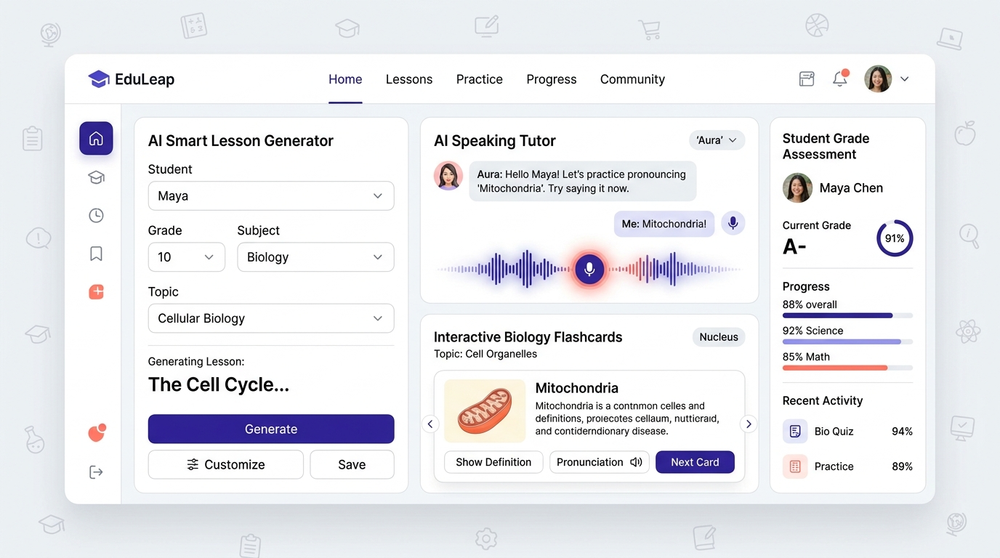

Maktablar va O'quv Markazlari uchun
Yagona Aqlli Boshqaruv Ekotizimi
Abdora AI — barcha darsliklar, testlar, qabulxona, moliyaviy hisob-kitoblar va o'qituvchi ishini yagona ko'p-agentli AI tizimiga birlashtiruvchi zamonaviy SaaS platforma.
O'qituvchilarning darsga tayyorgarligi va qog'ozbozligi qisqaradi
Gemini 3.8 Flash, GPT-4o, Claude 3.7 orqali maxsus tayyorgarlik
Davlat maktablari, xususiy litseylar va o'quv markazlariga to'la integratsiya
Bugungi Maktab va O'quv Markazlari Nega Qiynalmoqda?
Ta'lim muassasalari har kuni 4 ta asosiy to'siqqa duch keladi:
O'qituvchilarning Qog'ozbozlik Yuki
O'qituvchi haftasiga 15-20 soat vaqtini dars rejasi yozish, test tuzish, daftarlarni qo'lda tekshirishga sarflaydi. O'quvchi bilan jonli ishlashga kuch qolmaydi.
Tarqoq va Qimmat Dasturlar Xaosi
Lidlar uchun bitta dastur, kassa va to'lovga Excel, davomatga daftar, testga alohida sayt. Xodimlar chalkashadi, xarajatlar esa har oy oshib ketadi.
Individual Repetitorsiz Ta'lim Sifati Pastligi
30-40 kishilik sinfda har bir o'quvchiga alohida yondashish imkonsiz. Qoloq o'quvchi orqada qolib ketaveradi, chunki uning shaxsiy AI repetitori yo'q.
Shaffof Monitoring va Analitika Yetishmasligi
Direktor yoki markaz rahbari har bir filial, o'qituvchi va sinfning real bilim darajasi va daromad dinamikasini real-vaqt rejimida ko'ra olmaydi.
Abdora AI: Yagona Integratsiyalashgan Ekotizim
Maktab va o'quv markazining barcha jarayonlarini bitta platformada avtomatlashtirish:
Ko'p-Agentli AI Dvigateli
Dars konspektlari generatsiyasi, testlar tuzish, uy vazifasini AI tekshirishi va jonli audio speaking mashqi.
Smart LMS & Darsliklar
Video darslar, interaktiv kartochkalar, davomat jurnali, xonalar bandligi va dars jadvali avtomatik boshqaruvi.
Moliya & Kassa Tizimi
Click/Payme orqali to'lovlar, avto-kvitansiyalar, xarajatlar tahlili va o'qituvchilarga oylik maosh (Payroll) hisoblash.
Gamifikatsiya & Do'kon
O'quvchilar dars va testlar uchun Coins va XP yig'adi, bilim reytingida ko'tariladi va sovg'alar do'konida almashtiradi.
Zamonaviy Light Mode UI/UX va Real Ekranlar
Faqat g'oya emas — to'liq ishga tushirilgan va backendga ulangan jonli platforma:

"Bu Tizim Umumta'lim va Xususiy Maktablarga Ham To'g'ri Keladimi?"
JAVOB: HA, 100% MOS KELADI VA KUNDALIK.COM (E-MAKTAB) BILAN RAQOBAT EMAS, BALKI UNI TO'LDIRADI!
e-Maktab (Kundalik) bilan Farqi nima?
e-Maktab faqat rasmiy baho qo'yish va elektron jurnal hisoblanadi. Unda o'qitish vositasi yo'q! Abdora AI esa darsning ichiga kiradi: mavzu bo'yicha test tuzadi, o'quvchiga tushunmagan joyini tushuntiradi va o'qituvchining dars konspektini tayyorlab beradi.
Maktab O'qituvchisi uchun "AI Metodist"
Davlat ta'lim standartlari (DTS) asosidagi dars rejalarini, 4 xil variantdagi BSB (Choraklik) va CHSB testlarini bir tugma bilan PDF formatda chiqarib beradi. O'qituvchi charchamaydi!
Sinfdan Tashqari "24/7 Repetitor"
Maktabdan uyga borgan o'quvchi qimmat repetitor yollay olmaydi. Abdora AI o'quvchining telefonida istalgan fandan (biologiya, kimyo, ingliz tili, matematika) sabr bilan mavzuni tushuntirib beradi.
Maktab Rahbariyati (Direktor/Zavuch) uchun Real Nazorat
Direktor oylik yig'ilishni kutmasdan, aynan qaysi sinf yoki o'quvchi qaysi mavzulardan oqsayotganini sun'iy intellekt tahlili orqali grafiklarda ko'rib turadi.
Katta Bozor va Barqaror Biznes Model
B2B SaaS va B2C Freemium orqali barqaror daromad oqimi:
10,200 ta davlat maktabi, 600+ xususiy maktab, 5,500+ o'quv markazlari.
O'quvchilar va talabalar auditoriyasi
Ta'lim Kelajagini Bugun
Abdora AI Bilan Birga Quramiz!
10+ o'quv markazlari va 500+ o'quvchi sinovidan o'tgan tayyor arxitektura.
Maktab darsliklari bazasi va mobil ilovani to'liq tarqatish.
Qozog'iston va Qirg'iziston bozorlariga lokalizatsiya va eksport.
"Biz o'qituvchini almashtirmaymiz — biz unga sun'iy intellekt qanotlarini beramiz!"